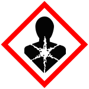
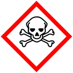
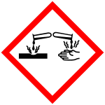

Risctox
formaldehído (concentracion 90 por 100), formaldehído . . . %, formol
cancerígena, mutágena, neurotóxica, sensibilizante
Clasificación y etiquetado reglamento 1272/2008
- Toxicidad crónica
- Toxicidad aguda (oral, cutánea, por inhalación)
- Corrosivo
- Peligro
-
H350: Puede provocar cáncer
- H341: Se sospecha que provoca defectos genéticos
- H301: Tóxico en caso de ingestión
- H311: Tóxico en contacto con la piel
- H331: Tóxico en caso de inhalación
- H314: Provoca quemaduras graves en la piel y lesiones oculares graves
- H317: Puede provocar una reacción alérgica en la piel
Notas: B y
D
| Concentración |
Etiquetado |
| C >= 25 % |
Corr. cut., 1B; H314 |
| C >= 5 % |
STOT única, 3; H335 |
| C >= 0,2 % |
Sens. cut., 1; H317 |
Valores límite de exposición profesional
|
VLA-EC
|
Notas |
0.3 ppm
0.37 mg/m3
|
Sen,
y
|
Grupos: aldehidos
Usos:
adhesivo, biocida, conservante, desengrasante, desinfectante, disolvente, endurecedor, fungicida, impermeabilizante, limpiador, lubricante, microbiocida, pesticida, protector de madera, refrigerante